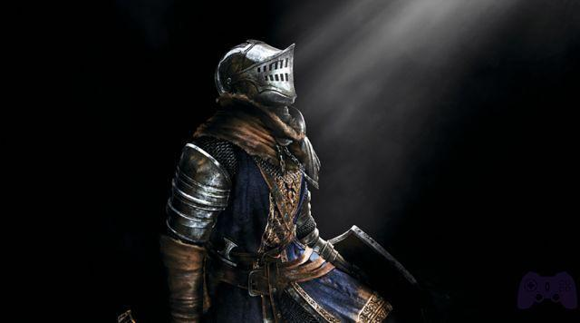
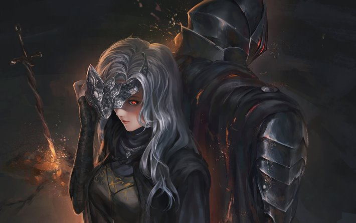
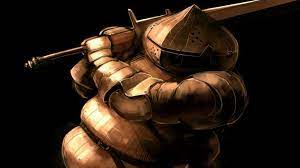

Personajes
Ser de la ceniza
El Ser de la ceniza es el personaje con el cual jugaremos toda nuestra aventura por el mundo de Dark Souls 3. Su historia dice que, en algún momento, intentó enlazar el fuego. Sin embargo, no fue lo suficientemente poderoso para la tarea, y las llamas lo redujeron a cenizas. Tiempo después, el Ser de la ceniza fue despertado por el tañido de la campana, indicando que el enlace del fuego estaba en peligro. El Ser de la ceniza se dispuso a abandonar su tumba, para cumplir su misión, la cual era asesinar a los antiguos señores de la ceniza, y de este modo poder acumular la fuerza para poder avivar la llama original, y prevenir una era de oscuridad.
Guardiana del fuego
Una mujer ciega de origen desconocido, es la actual Guardiana del Fuego que cuida de la hoguera del Santuario de Enlace al momento en que el Ser de la ceniza llega para cumplir con su deber. Ella utiliza una corona plateada que cubre sus ojos, y viste una túnica negra. Es capaz de transformar las almas en puro poder. Este personaje nos será muy útil durante nuestra travesía, ya que esta es la encargada de subirnos de nivel nuestras estadísticas, mientras que nosotros traigamos las almas suficientes (moneda del juego).
Siegward De Catarina
Siegward es un NPC del juego, encontrado por primera vez tomando un ascensor en el Asentamiento de no muertos. Le cuenta al jugador que está tratando de averiguar cómo llegar a la cima de la torre, para poder hablar con aquel que está lanzando flechas gigantes; sin embargo, el ascensor sólo desciende hasta el sótano. Después, Siegward se quedará sentado en un bordillo al lado del ascensor observando a un Demonio inactivo en la distancia. Si el jugador se lanza a por el Demonio, Siegward lo regañará, pero ofrecerá apoyo para derrotar al monstruo. Después de derrotar al Demonio, recompensará al jugador con un Siegbräu y los gestos "Brindar" y "Dormir".
Iudex Gundyr
En algún momento un campeón, parece ser que Gundyr llegó tarde al Santuario de Enlace, y fue recibido por un santuario sin fuego y una campana que no tañía. Gundyr fue derrotado por un guerrero desconocido, convirtiéndose en una vaina de la Espada en espiral con la esperanza de que algún día, la Primera Llama sería enlazada una vez más. De esta forma, Gundyr se convirtió en juez, esperando la llegada de la ceniza elegida a la cual entregar la Espada en espiral. En algún momento durante su vigilia, se convirtió en anfitrión de una retorcida corrupción que poseía voluntad propia.